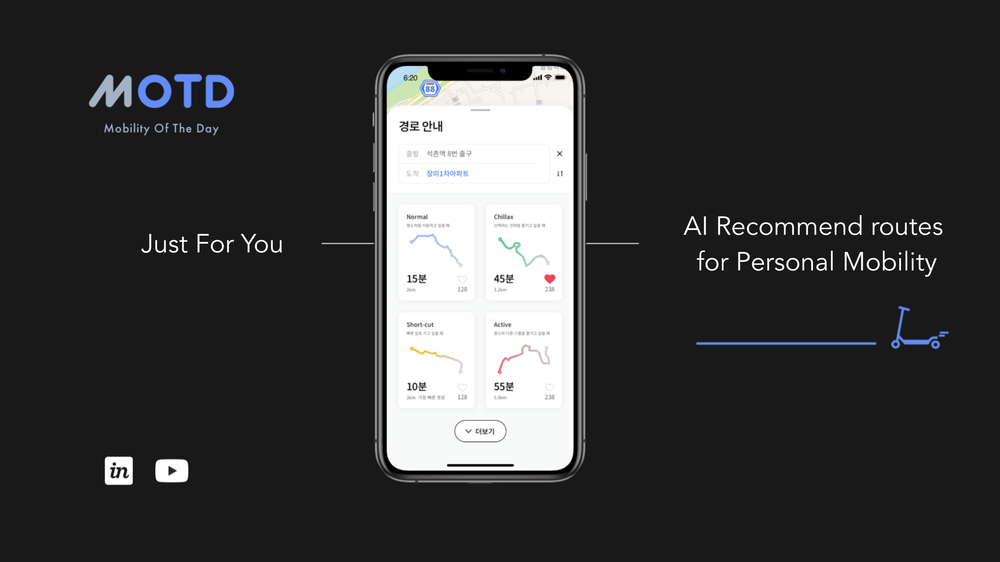
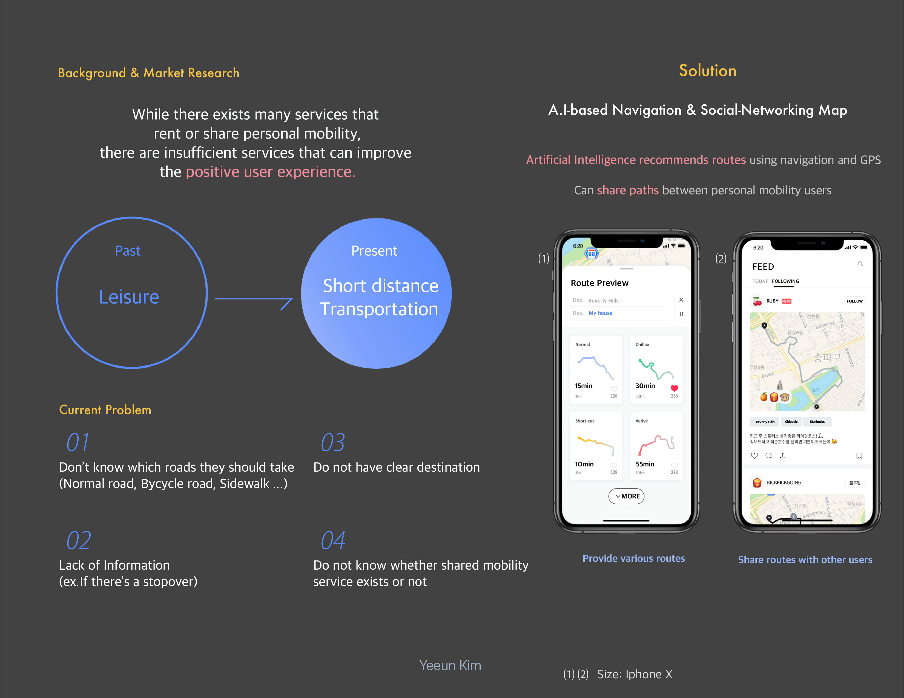
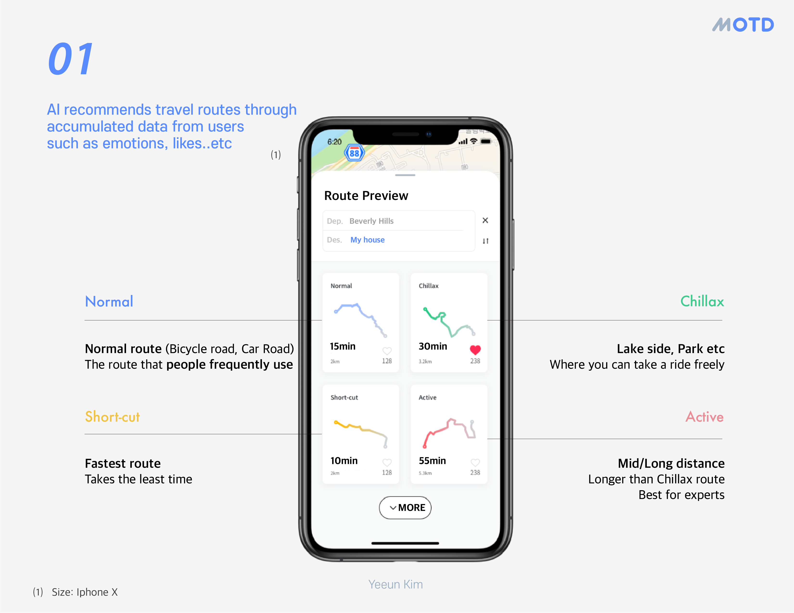
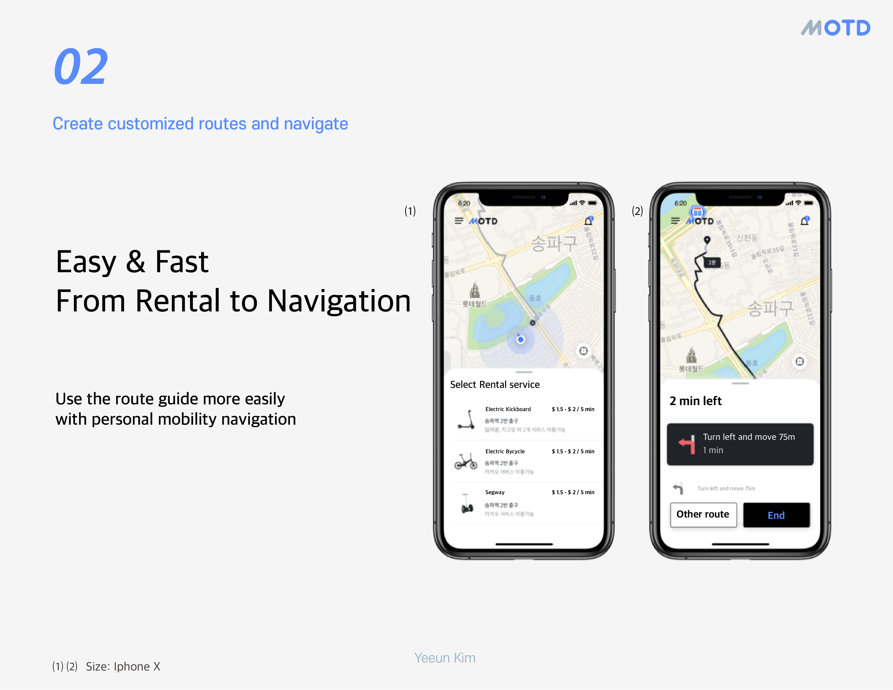

About the Project
MOTD is an AI service that recommends travel routes for people using personal mobility devices. Developed at the D.REAM Academy HCI Lab at Yonsei University under the 2019 theme of 'Connected AI', the project explores how AI can personalize urban navigation by understanding each user's emotions, character, and personality.
Through accumulated user data, the AI suggests different types of routes — not just the fastest path, but one that suits how the user is feeling that day. For example: a Manhattan worker on a Friday evening who wants to chill out after work can input keywords like "chill," and AI provides several route options tailored to that mood.

There are many applications that rent and share personal mobility devices. However, since there are no services providing tailored routes for personal mobility users in South Korea, our team designed and prototyped MOTD to fill that gap.

Logo & Branding
01 · Logo
I named this service Mobility of the Day (MOTD) and designed the logo. The name reflects the core idea: just as "Meal of the Day" is a curated daily choice, MOTD is a curated daily mobility experience — unique to each user, each day.
MOTD aims to promote the use of personal mobility devices — reducing gas consumption and contributing to a healthier urban environment. The branding reflects this eco-conscious, forward-looking identity.
Routes
03 · Routes
There are various types of routes that AI recommends to users based on their mood and preferences:
- Normal Route — A simple, straightforward path that people normally use.
- Chillax Route — Contains nearby lakes, parks, or rivers along the recommended path for a relaxing journey.
- Short-cut Route — The shortest way to reach the destination efficiently.
- Active Route — Usually for people who enjoy long-distance rides, typically taking more than 50 minutes.

How to Use
04 · How to Use
- Set up the starting point and ending point.
- Choose which personal mobility device to ride.
- Check the routes that AI recommended.
- Select one route and use it.
- Upload the path that you used if you want to share it.

Video
Tutorial

Advertisement